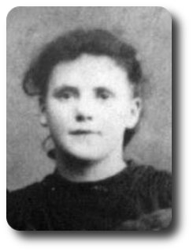

-->> 1909.09.09 (18)
-->> 1909.09.09 (18) 
Daughter of George William Newbury (born in 1859 in Sundon, Bedfordshire) and Caroline Bester (born in 1865 in Little Eversden, Cambridge) who were married in 1887 in Edmonton, Middlesex.
1891 is born in Edmonton, Middlesex, England ( unconfirmed: Mar 1891, Edmonton, v.3a, pg.422 )
1891.04.05 (2 m) living in Edmonton, Middlesex, England at 10 Gourie Terrace on Church St.
| 1891.04.05 Census, Civil Parish of Edmonton, Ecclesiastical Parish or District of All Saints | ||||||
| Residence: 10 Gourie Terrace on Church St., Edmonton, Middlesex | ||||||
| Last names | First names | Relation to Head | Condition as to Marriage | Age on Last Birthday | Occupation | Where Born |
| NEWBURY | GEORGE | Head | M | 31 | Carman | Beds, Sundon |
| NEWBURY | CAROLINE | Wife | M | 27 | Carman | Cams, Eversden |
| NEWBURY | ALFRED | Son | -- | 13 | Scholar | Middx, Edmonton |
| NEWBURY | ELIZABETH | Daur | -- | 3 | -- | Middx, Edmonton |
| NEWBURY | MILLICENT | Daur | -- | 2 months | -- | Middx, Edmonton |
1897.09.07 This was a big day, Elizabeth, Millie, Bill and Annie were all baptised at Tottenham in All Hallows on this Tuesday.
| 1897. Baptisms solemnized in the Parish of Tottenham in the County of Middlesex in the year 1897. | |||||||
| When Baptised | Child's Christian Name | Parents Name | Abode | Profession | |||
| 1897 Septr 7 | Millicent | George William & Caroline | 8 Prospect Place, Church Row | Grave digger | |||
1901.03.31 (10) living in Tottenham, Middlesex, England at 8 Prospect Place
| 1901 UK Census, Civil Parish of Tottenham, Ecclesiastical Parish of All Hallows (part of) | ||||||
| Residence: 8 Prospect Place, Tottenham, Middlesex | ||||||
| Last names | First names | Relation to Head | Condition as to Marriage | Age on Last Birthday | Occupation | Where Born |
| NEWBURY | GEORGE | Head | M | 42 | Labourer | Beds Bedford |
| NEWBURY | CAROLINE | Wife | M | 37 | -- | E Cambridge |
| NEWBURY | ELIZABETH | Daur | -- | 13 | -- | Middx Edmonton |
| NEWBURY | MILLICENT | Daur | -- | 10 | -- | Middx Edmonton |
| NEWBURY | WILLIAM | Son | -- | 7 | -- | Middx Edmonton |
| NEWBURY | ANNIE | Daur | -- | 5 | -- | Middx Edmonton |
| NEWBURY | GEORGE | Son | -- | 10 m. | -- | Middx Edmonton |
1904.10.21 (13) father George William Newbury dies in England
1905 (14) sister Elizabeth Newbury (17) marries Harry Allinson in Edmonton, Middlesex, England
1908.04.02 (17) mother Caroline (Bester) Newbury and three youngest emigrate to Canada
1909.09.09 (18) emigrates to Canada. Travelled from Liverpool, England on the White Star Line's Canada bound for Montreal, Que. and Quebec, Que. Arrived at Quebec on 17 SEPT 1909 at 1:00 am. From Library and Archives Canada, Reference: RG 76, Microfilm: T-4763: ship's passenger list, she is on pg. 4. There is only her on her ticket: carrying $2.00, Millicent Newberry, (18), (hard to read here:) joining parents Victoria St., Orillia, Ont., Domestic, C of E; Number of Souls: Adults: 446, Chidren: 83. Passengers loaded at 7am: Soloon: 146, 2nd Cabin: 210: Steerage: 173.
1910.04.07 (19) sister Elizabeth and family emigrates to Canada
1911.02.18 (20) daughter Dorothy Ruth is born
1911.04.18 (20) sister Elizabeth dies in Orillia, her baby survies
1911.06.01 census: living in Toronto, Ontario, Canada, St.Clair Gardens, Redemption House Province: Ontario, District No. 138 South York, Enumeration District No. 94 Ward 6 in City of Toronto. Millicent Newbury, inmate, born Jan 1890 (21), England, immigrated 1910, English, Canadian, Anglican, can read and write; Ruth D. Newbury, inmate, born Feb 1911 (3 m.), Ontario, English, Canadian, Anglican. There were 12 other mothers and 13 other children along with the Superintendant (Eva Rose York, author of Feathers with yellow gold : the story of Redemption Home, Toronto, Canada (1920)) and Assistant Superintendant.
1912.07.18 (22) sister Annie Newbury marries Frederick Bingley in Toronto, Ontario, Canada
1912.11.11 (22) mother Caroline (Bester) Newbury (47) marries Coleman Armstrong in Orillia, Ontario, Canada
1914.09.11 (24) Millie marries in Orillia, Ontario, Canada Affidavit says: At Orillia, in the County of Simcoe, 11th day of September, 1914. Bridegroom: Herbert Cameron, 26 years, Residence: Atherly; Born: Atherly; Bachelor; Occupation: Bridge Tender; Presbyterian; Father: Donald Cameron; Mother: Annie McLean; Bride: Millie Newbury; 24 yeaars, Residence: Orillia; Born: Edmonton, England; Spinster; Anglican; Father: George Newbury; Mother Caroline Bester. Witnesses: James Thomas Chapman, Orillia and Edith Chapman, Orillia.
From The Weekly Times, Orillia, Thursday, September 17, 1914
CAMERON-NEWBURY
At the Rectory, Orillia, on September 11, by Rev J.R.S. Boyd, Herbert Cameron of Atherly, and Millie Newbury, Orillia.
1915.08.08 (25) daughter Ethel Cameron is born
1919.03.22 (29) daughter Alberta Cameron is born
1919.07.19 (29) brother William Newbury (19) marries Letitia Reber in Toronto, Ontario, Canada
1921.09.22 (31) brother Thomas Newbury (21) marries Alice Latham in Toronto, Ontario, Canada
1922.05.18 (32) son William Cameron is born
193? (40) p. with
-->>
1980.12.09 b. England
1954.04.23 d. Orillia, Ontario, Canada Statement of Death says: Place of Death: Town of Orillia, Soldiers Memorial Hosp, County of Simcoe; Date of Death: April 23, 1954; Leng Deceased Resided: In Ontario: 72 yrs, In Canada: 72 yrs; Name: Woods, Walter James; Permanent Residence: Town of Orillia, 16 Peter St. S., Township of Orillia, County of Simcoe, Province of Ontario, Country - Canada; Citizenship: Canadian; Racial Origin: English; Country of Birth: England; Date of Birth: December 9, 1880; Age 73 years, 4 Months, 14 Days; Trade: Taxi operator; Last worked: Sept. 1, 1949; Years engaged in this occupation: 40 yrs.; Widowed, wife: Mary Henderson; Father: Samual Woods, born in England; Mother: Elizabeth Frost, born in England; Certified: April 23, 1954, Mrs. Ruth Herriman, Atherly Rd., Orillia, Ont, no relationship to deceased; Burial: April 2?, 1954, Orillia, St. James; Undertakers: Doolittle Bros, Orillia.
1932 (42) son Donald Russell Herriman is born
1936.06.02 (45) mother Caroline (Bester/Newbury) Armstrong age 70 dies in Orillia, Ontario, Canada
1936.06.05 (45) mother's funeral at Millie's home at 150 Mississaga Street East, Orillia
1948.08 (57) brother Thomas age 47 dies in Bath, Ontario, Canada
1953 (62) son Donald Russell Herriman marries Yvonne Marie Fox
1964 (73) dies in Orillia, Ontario, Canada [cemetery marker, Atherly Cemetery]
{kind=link}